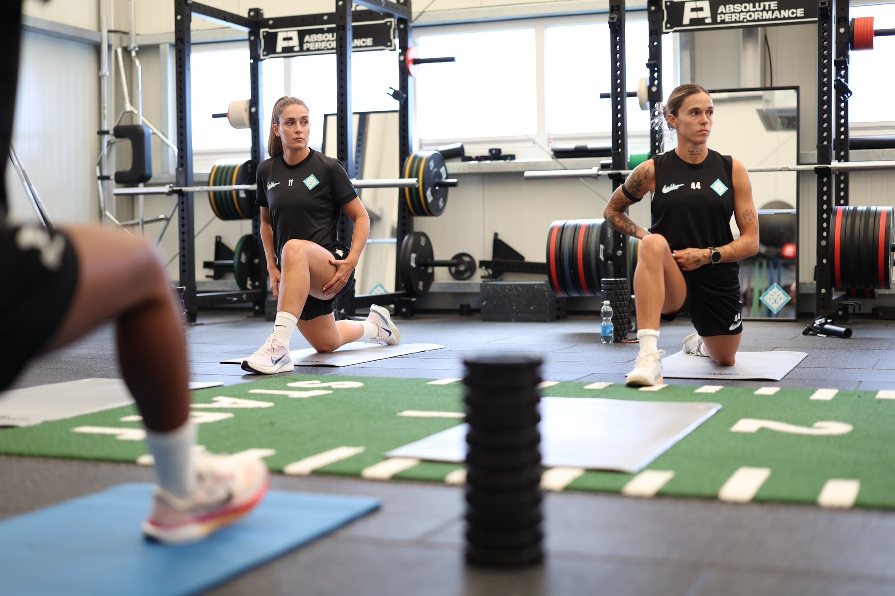

Es un modelo exclusivo, dorado y blanco, diseñado por la tres veces Balón de Oro, con su logo personal y un mensaje grabado en el interior.
 Los botines de Alexia. Imagen: YouTube
Los botines de Alexia. Imagen: YouTube
Alexia Putellas es de las pocas futbolistas del mundo con botines propios. La jugadora de London City Lionesses estrenó en la Barclays WSL un modelo exclusivo de Nike, diseñado por ella, en dorado y blanco. Lo usó en el partido en el que London City cayó 1-2 ante Manchester City.
Los botines llevan el logo personal de Alexia, el 11, y dentro de la bota tienen grabada la frase "Greatness is crafted". Nike los presentó con un lema de campaña: "Players have seasons, Queens have eras". Es el tercer modelo personalizado de la jugadora con la marca, después de los de 2021 y 2022.
 Alexia, con la dorada. Imagen: YouTube
El nuevo modelo en acción. Video: YouTube
Alexia, con la dorada. Imagen: YouTube
El nuevo modelo en acción. Video: YouTube
Hay una discrepancia entre los medios sobre la base del botín: Europa Press habla de una Phantom GX3, mientras que Footy Headlines lo identifica como Phantom 6. Nike no aclaró el dato en lo que pudimos consultar.
Contar con un modelo personalizado no es habitual en el fútbol femenino, donde pocas jugadoras tienen líneas o ediciones a su nombre. La marca apuesta por Alexia como una de sus figuras globales: el mensaje de campaña, "Players have seasons, Queens have eras" (los jugadores tienen temporadas, las reinas tienen eras), apunta a su trayectoria y a su peso dentro y fuera de la cancha. El detalle grabado en el interior de la bota, "Greatness is crafted" (la grandeza se construye), refuerza esa idea.

Alexia Putellas en London City Lionesses.Alexia llegó a London City tras su paso por el Barcelona y el equipo es hoy tercero en la WSL. Con tres Balones de Oro (2021, 2022 y 2025), la futbolista española sigue siendo una de las caras más fuertes de Nike en el fútbol femenino. El debut de los botines llegó en una derrota, 1-2 ante Manchester City, pero el equipo londinense mantiene su lugar en la parte alta de la tabla.
Los botines anteriores de Alexia, de 2021 y 2022, coincidieron con sus dos primeros Balones de Oro, por lo que esta tercera edición vuelve a ser un símbolo de su momento: con el 11 en el talón y el dorado como protagonista.
Más sobre los botines. Video: YouTubeSeguir leyendo
Seguinos en redes